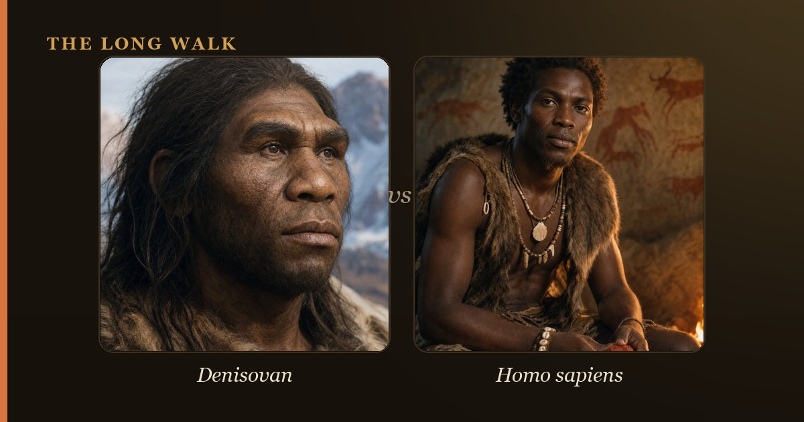

Denisovans interbred with modern humans multiple times, and their DNA persists in living populations, particularly in Oceania and East Asia. The most famous Denisovan legacy is the EPAS1 gene, which helps Tibetans and Sherpa thrive at high altitude with limited oxygen. Other Denisovan variants influence immune function and cold adaptation, proving that ancient interbreeding left functional gifts we use today.

Denisovans are one of science's great mysteries: an entire human species we know almost entirely through DNA. Unlike Neanderthals, who left behind abundant bones, tools, and art, Denisovans left us just a finger bone, a few teeth, and a partial jaw from Denisova Cave in the Siberian Altai Mountains and the Xiahe mandible from Tibet. Yet their genome tells a richer story than thousands of skeletal remains could. We now know they split from Neanderthals roughly 300,000 to 400,000 years ago, evolved separately in Asia and beyond, and interbred repeatedly with our ancestors as modern humans migrated eastward.
Today, Denisovan DNA does not haunt the fringes of human ancestry—it powers the lives of hundreds of millions of people. From the highlands of Tibet to the jungles of Papua New Guinea, from Aboriginal Australia to the islands of Southeast Asia, living humans carry measurable amounts of Denisovan genetic material. Some of these ancient variants are not evolutionary leftovers; they are functional treasures that helped our ancestors survive in extreme environments and still benefit us today.
| Population | Denisovan ancestry | Notable inherited trait |
|---|---|---|
| Papuans (New Guinea) | 4–6% | Immune system genes; infection resistance |
| Aboriginal Australians | 3–5% | Immune function variants |
| Philippine Ayta Magbukon | ~5% (highest known) | Genetic markers of high introgression |
| Island Southeast Asians | 1–3% (variable) | Immune and metabolic genes |
| Tibetans & Sherpa | <0.5% (selected) | EPAS1 gene for high-altitude oxygen efficiency |
| East Asians (Han, Japanese) | ~0.2% | Minimal functional variants identified |
| Europeans | ~0% (none detected) | No Denisovan ancestry |
Who Were the Denisovans?
The Denisovans were a sister species to Neanderthals, part of the broader group of ancient humans that also included our direct ancestors. They evolved in Asia, likely inhabiting vast territories from Siberia to Southeast Asia to the Indonesian archipelago. While we know little about their physical appearance—the few bones we have suggest they may have been robust and cold-adapted—their DNA reveals a sophisticated story of population diversity. Genetic evidence suggests at least two distinct Denisovan populations existed, each with its own characteristics and range, and possibly more.
We recognize Denisovans almost entirely through DNA recovered from those rare bone fragments and through modern human genomes that contain their genetic legacy. By comparing DNA from living people across Asia and Oceania, researchers can detect the "fingerprints" of Denisovan introgression—segments of DNA that match the sequenced Denisovan genome far better than they match other archaic human lineages. This approach has been remarkably powerful: it revealed Denisovans long before anyone knew enough about them to give them a scientific name.
Where Denisovan DNA Survives Today
Denisovan ancestry is not evenly distributed across humanity. Instead, it forms a striking geographic pattern that reveals ancient human migration and mating networks. The highest concentrations are in Oceania: Papuans and other indigenous populations from New Guinea, Aboriginal Australians, and populations across Southeast Asia and the Pacific Islands carry the most Denisovan DNA. The Philippine Ayta Magbukon—a small-bodied population sometimes called "Negritos"—have the highest reported Denisovan ancestry at roughly 5 percent of their genome.
This pattern tells us something profound: modern humans who migrated to Southeast Asia and Oceania encountered and interbred with Denisovans repeatedly. East Asians—Han Chinese, Japanese, and Koreans—carry much less Denisovan DNA, around 0.2 percent, suggesting either fewer encounters or less admixture as populations moved northward and westward. Mainland Southeast Asians and South Asians carry small amounts. Critically, people of purely European ancestry carry essentially no Denisovan DNA. The Denisovans never reached Europe and never interbred with the ancestors of Europeans; that role belonged to Neanderthals.
The Tibetan Altitude Gene: EPAS1
The most celebrated example of a Denisovan genetic gift is the EPAS1 gene, a high-altitude adaptation inherited by Tibetans, Sherpa, and other mountain-dwelling populations. This gene helps the body produce hemoglobin and manage oxygen transport efficiently in thin air. Tibetans and Sherpa who carry Denisovan variants of EPAS1 can live and work at altitudes above 12,000 feet without suffering severe altitude sickness, where other humans would struggle or fail.
Research by Huerta-Sanchez and colleagues (2014) showed that this variant was introgressed from Denisovans into the ancestors of modern Tibetans roughly 30,000 to 40,000 years ago. Today, the Denisovan version of EPAS1 is nearly universal in Tibetan populations and has become so advantageous that natural selection spread it through the population quickly. This is not a relic of the past; it is an active, functional adaptation that lets millions of people thrive in one of Earth's most extreme environments. Denisovans may have disappeared, but their solution to high-altitude living survives and prospers.
Other Denisovan Legacies in the Human Genome
Beyond EPAS1, researchers have identified other Denisovan-derived genetic variants with measurable effects on human traits and survival. In populations across Oceania and Southeast Asia, Denisovan ancestry correlates with variants that tune immune function, affecting how the body recognizes pathogens and mounts immune responses. These variants may have been selected for because they helped early modern humans survive tropical diseases and unfamiliar pathogens in their new environments, or because they balanced immunity in ways that reduced autoimmune disease risk.
In Greenlandic Inuit, variants in the TBX15 and WARS2 genes—regions inherited from Denisovans—influence body-fat distribution and cold tolerance. These genes affect how the body stores and metabolizes fat and may have helped Arctic-dwelling populations maintain body heat and energy reserves in extreme cold. This pattern mirrors Neanderthal legacy genes in non-African populations: ancient introgression is not random noise, but a source of adaptive solutions to local challenges.
Immune Genes and Metabolic Trade-offs
Many Denisovan variants affect immune-related genes, including variants in the MHC (major histocompatibility complex) region and others that influence antigen presentation and T-cell function. The presence of these variants in modern Oceanian populations suggests that Denisovans carried immune gene versions that were advantageous in tropical and subtropical environments—perhaps against parasites, viruses, or bacteria that were abundant in the regions where modern humans and Denisovans coexisted.
Two Waves of Interbreeding
One of the most striking findings from Denisovan genetic research is that the Denisovan DNA in Papuans differs measurably from the Denisovan DNA in East Asians. This tells us that at least two distinct Denisovan introgression events occurred—possibly from two different Denisovan populations, or from Denisovans encountered at different times and places. The first major wave may have involved a Denisovan population related to the samples found in Denisova Cave; the second may have involved a different Denisovan lineage encountered further south or east.
This complexity underscores that the Denisovans were not a single homogeneous group. They were a geographically dispersed species with regional populations that evolved somewhat independently. When modern humans swept into Asia and Oceania, they encountered and interbred with multiple Denisovan groups in different locations. The result is a patchwork of Denisovan ancestry across modern Asian and Oceanian genomes—proof of a complex web of ancient encounters.
Why We Know Denisovans Mainly Through DNA
Unlike Neanderthals, who left a rich fossil record spanning hundreds of millennia, Denisovans left barely a trace in the archaeological record. We have no Denisovan tools, art, or hearths that we can definitively identify. We know they existed and spread across vast territories largely because their genes survived in living humans and ancient DNA researchers could extract and sequence their genomes from a handful of bone fragments. This situation reveals both the power and the limitation of ancient DNA: it can reveal the presence of a species and even something about its genetic diversity, but it cannot tell us how Denisovans lived, what they thought, or how they adapted culturally.
The bones we do have—the finger bone from Denisova Cave (dated to around 40,000 years ago), teeth from the same site, and the Xiahe mandible from the Tibetan Plateau (roughly 160,000 years old)—suggest that Denisovans were robust, possibly adapted to cold climates, and present across a huge east-west range. But these fragments leave most questions unanswered. Their skeleton remains a ghost, their history pieced together from the genetic legacies they left behind in modern humans.
What Denisovan DNA Tells Us About Human Evolution
The discovery of Denisovan DNA in modern humans transformed our understanding of how Neanderthals and Denisovans compare as evolutionary forces. It revealed that introgression—the flow of genes from extinct species into modern humans—was not a rare event but a recurring theme in human evolution. Modern non-African humans carry DNA from both Neanderthals (roughly 1–2 percent) and Denisovans (highest in Oceania at 3–6 percent), and these contributions are not vestigial: many introgressed variants are under positive selection, meaning they increase survival or reproduction in modern humans.
This pattern suggests that when modern humans encountered archaic human species, they did not simply replace them; they absorbed them genetically. Archaic populations contributed adapted genes that helped modern humans survive in new environments. Denisovans contributed expertise for high-altitude life, tropical immune challenges, and cold adaptation. Neanderthals contributed immune and metabolic adaptations suited to Ice Age Europe. These contributions continue to matter: Denisovan altitude genes still keep Tibetans alive at extreme elevations, and archaic immune variants still shape how billions of people fight disease.
The story of Denisovan DNA is ultimately a story of human resilience and interconnection. An extinct species whose bodies we barely know left us gifts encoded in our cells—solutions to survival problems that still benefit us today. Denisovans may have vanished, but their genetic wisdom persists in hundreds of millions of people, a reminder that human evolution has never been a simple story of replacement, but a complex dance of encounter, interbreeding, and adaptation.
See how Denisovan ancestry reached Melanesia and the Tibetan Plateau on the interactive migration map.
Explore the family tree →Frequently asked questions
What should I know about Denisovan DNA in Modern Humans?
Denisovans interbred with modern humans multiple times, and their DNA persists in living populations, particularly in Oceania and East Asia. The most famous Denisovan legacy is the EPAS1 gene, which helps Tibetans and Sherpa thrive at high altitude with limited oxygen.
Who Were the Denisovans?
The Denisovans were a sister species to Neanderthals, part of the broader group of ancient humans that also included our direct ancestors. They evolved in Asia, likely inhabiting vast territories from Siberia to Southeast Asia to the Indonesian archipelago.
- Reich, D. et al. (2010). 'Genetic history of an archaic hominin group from Denisova Cave in Siberia.' Nature 468. nature.com
- Huerta-Sanchez, E. et al. (2014). 'Altitude adaptation in Tibetans caused by introgression of Denisovan-like DNA.' Nature 512. nature.com
- Smithsonian Human Origins — Denisovan DNA. humanorigins.si.edu